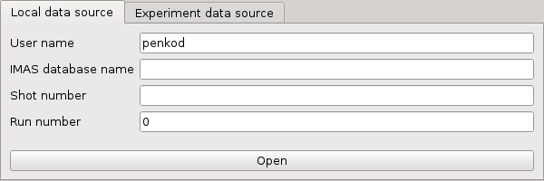

2.1. Getting Started¶
This section describes setting the environment configuration required to run the IMASViz tool and how to run the application itself.
2.1.1. Running IMASViz as a module¶
The procedure below describes how to load and run IMASViz which is available as a module on the GateWay and ITER HPC cluster.
2.1.1.1. On the GateWay HPC¶
2.1.1.1.1. Setting the Environment¶
In a new terminal, execute the following command in order to load the required modules:
module load cineca
module load imasenv # or any other specific imasenv module version
module load imas-viz/v2
# The next few modules should be loaded together with imasenv module
# Listing them all here in case of module related issues.
# module load itm-gcc/6.1.0
# module unload itm-python/2.7
# module load itm-python/3.6
# module load itm-qt/5.8.0
# Listing all available imas-viz modules can be done by running
module av imas-viz
# With the imas-viz module loaded (version 2.3.0 or never)
# the documentation can be accessed by running
biz-doc
Warning
IMPORTANT! IMAS databases (IDSs) were written using specific version of
IMAS. In order to open these IDSs the same IMAS module version should
be used due to possible IDS database structure changes through different
versions. Any tools or utilities that work with IDSs, including IMASViz,
cannot work properly if this “IMAS version mismatch” is too great (!).
2.1.1.1.2. Running IMASViz¶
With the environment set, run the IMASviz by simply typing the following command:
viz
The main GUI window of IMAS_VIZ should display, as shown in the figure below:
{kind=link}
The description of the above input parameters is as follows:
GUI Fields |
Description |
|---|---|
User name |
Creator/owner of the IMAS IDSs database |
IMAS database name |
IMAS database label, usually device/machine name of the IMAS IDS database (i. e. iter, aug, west…) |
Shot number |
Pulse shot number |
Run number |
Pulse run number |
2.1.1.1.3. Available testing IMAS databases¶
On the GateWay HPC there are a few testing IMAS IDS cases available. These databases are the main source of data used for IMASViz testing purposes and were also included in writing the this documentation. Users can freely use them for examples and practice purposes.
Note
There IMAS IDS cases are confirmed to work with IMAS versions 3.23.2 - 3.24.0.
Available IMAS IDS Case Parameters |
|||
|---|---|---|---|
Parameters |
Case 1 |
Case 2 |
Case 3 |
User name |
g2penkod |
g2penkod |
g2penkod |
IMAS database name |
viztest |
viztest |
viztest |
Shot number |
52344 |
52682 |
53223 |
Run number |
0 |
0 |
0 |
2.1.1.2. On ITER HPC¶
2.1.1.2.1. Setting the Environment¶
In a new terminal, execute the following command in order to load the required modules:
module load
module load IMAS # or any other specific IMAS module version
module load Viz
# The next few modules should be loaded together with imasenv module
# Listing them all here in case of module related issues.
# Qt5/5.10.1-intel-2018a
# PyQt5/5.9.2-intel-2018a-Python-3.6.4
# PyQtGraph/0.10.0-intel-2018a-Python-3.6.4
# Listing all available Viz modules can be done by running
module av Viz
Warning
IMPORTANT! IMAS databases (IDSs) were written using specific version of
IMAS. In order to open these IDSs the same IMAS module version should
be used due to possible IDS database structure changes through different
versions. Any tools or utilities that work with IDSs, including IMASViz,
cannot work properly if this “IMAS version mismatch” is too great (!).
2.1.1.2.2. Running IMASViz¶
With the environment set, run the IMASViz by simply typing the following command:
viz
The main GUI window of IMAS_VIZ should display, as shown in the figure below:
The description of the above input parameters is as follows:
GUI Fields |
Description |
|---|---|
User name |
Creator/owner of the IMAS IDSs database |
IMAS database name |
IMAS database label, usually device/machine name of the IMAS IDS database (i. e. iter, aug, west…) |
Shot number |
Pulse shot number |
Run number |
Pulse run number |
2.1.1.2.3. Available testing IMAS databases¶
On the ITER HPC there are a few testing IMAS IDS cases available. These databases are the main source of data used for IMASViz testing purposes and were also included in writing the this documentation. Users can freely use them for examples and practice purposes.
Note
There IMAS IDS cases are confirmed to work with IMAS versions 3.23.2 - 3.24.0
Available IMAS IDS Case Parameters |
||
|---|---|---|
Parameters |
Case 1 |
Case 2 |
User name |
penkod |
penkod |
IMAS database name |
viztest |
viztest |
Shot number |
52344 |
52682 |
Run number |
0 |
0 |
2.1.2. Running IMASViz from source¶
The procedure below describes how to run IMASViz from source.
2.1.2.1. Requirements¶
The fundamental requirements in order to locally run IMASViz are:
IMAS
- Python3 and Python libraries:
PyQt5
pyqtgraph
matplotlib
Sphinx (pip3 install sphinx)
Sphinx RTD theme (pip3 install sphinx_rtd_theme)
2.1.2.2. Obtaining the source code¶
To obtain the IMASViz code source the next two steps are required:
Clone repository from git.iter.org (permissions are required!).
Direct link to the IMASViz git.iter repository: IMASViz.
Switch to IMASViz2.0 branch (required if master branch is not updated yet)
git fetch # optional git branch -r # optional git checkout develop
2.1.2.3. Setting the environment¶
To set the environment, go to viz directory and set VIZ_HOME
and VIZ_PRODUCTION environment variables by running the next
commands in the terminal:
cd viz
# bash
export VIZ_PRODUCTION=0
export VIZ_HOME=$PWD
# csh
setenv VIZ_PRODUCTION 0
setenv VIZ_HOME $PWD
Then proceed with the next instructions.
2.1.2.3.1. GateWay HPC¶
Load next modules:
module load cineca
module load imasenv
module load itm-gcc/6.1.0
module load itm-python/3.6
module load itm-qt/5.8.0
2.1.2.4. Running IMASViz¶
To run IMASViz, run the next commands in terminal:
python3 $VIZ_HOME/imasviz/VizGUI/QtVIZ_GUI.py
The main GUI window of IMAS_VIZ should display, as shown in the figure below:
The description of the above input parameters is as follows:
GUI Fields |
Description |
|---|---|
User name |
Creator/owner of the IMAS IDSs database |
IMAS database name |
IMAS database label, usually device/machine name of the IMAS IDS database (i. e. iter, aug, west…) |
Shot number |
Pulse shot number |
Run number |
Pulse run number |
2.1.3. Latest documentation and manual¶
The documentation provided on other sources (confluence pages etc.) than the project repository might not be up to date. To get the latest documentation, first obtain the IMASViz source code (see Obtaining the source code).
Then navigate to
cd $VIZ_HOME/doc
and run
# for PDF documentation
module load texlive
make pdflatex
firefox build/latex/IMASViz.pdf
# for HTML documentation
make html
firefox build/html/index.html
Note
Additional prerequisites for generating the documentation: Sphinx and Sphinx RTD theme (listed in Requirements)